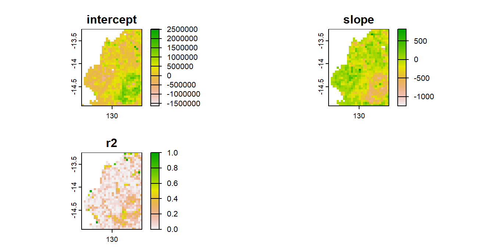
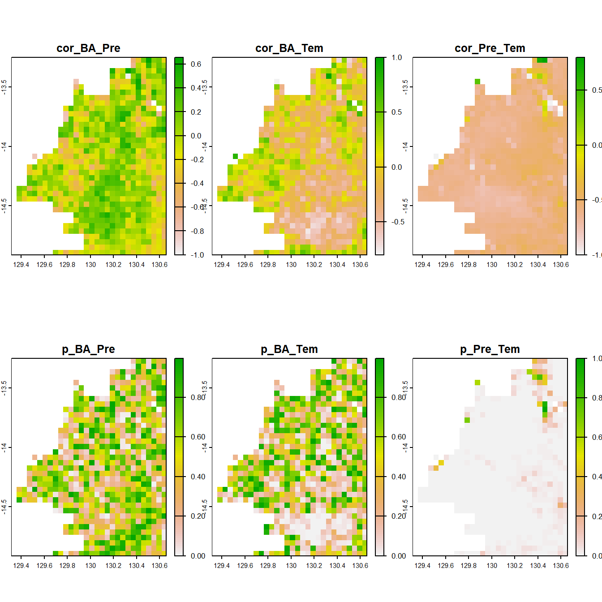

This code is designed to compute the linear trend (slope and intercept) of burned area over time for each grid cell using linear regression, and save the results as a new geotiff.
Description of steps
Load necessary libraries
Load required packages for raster processing and file system access:
terra for spatial raster operations
fs for file listing and path management
Read raster files for burned area, precipitation, and temperature
Use fs::dir_ls() to list .tif files from respective folders and load them into raster stacks with terra::rast().
Rename raster layers by year (2000–2024)
Assign meaningful names to each layer using paste0("BA", 2000:2024) (and similarly for Pre and Tem) to standardize temporal reference.
Resample all raster layers to a common spatial resolution
Ensure spatial alignment by resampling BA and Pre to match the resolution of Tem:
method = "sum" for burned area aggregation
method = "average" for precipitation
Combine all variables into a single raster stack
Merge burned area, precipitation, and temperature layers into one multi-layer object (grid) for future analyses.
Define the regression function
Create a function lm_fun that:
Uses year = 2000:2024 as the independent variable
Applies lm() to fit a linear model of burned area against year
Returns the intercept, slope (trend), and R² value of the model
Apply the regression model across all raster cells
Use terra::app() to apply the regression function to each cell of the BA layers (25-year time series), utilizing parallel computing (cores = 8).
Rename regression result layers
Label the output layers as "intercept", "slope", and "r2" to indicate the regression coefficients and model fit.
(Optional) Save the regression output or export results
You may use terra::writeRaster() to save the ba_lm raster to disk or extract summary statistics for further analysis.
Code
fs::dir_ls('./data/1. Data collection/BurnedArea',regexp =".tif$")|>terra::rast()->banames(ba)=paste0("BA", 2000:2024)fs::dir_ls('./data/1. Data collection/Pre/',regexp =".tif$")|>terra::rast()->prenames(pre)=paste0("Pre", 2000:2024)fs::dir_ls('./data/1. Data collection/Tem/',regexp =".tif$")|>terra::rast()->temnames(tem)=paste0("Tem", 2000:2024)ba|>terra::resample(tem,method ="sum",threads =TRUE)->bapre|>terra::resample(tem,method ="average",threads =TRUE)->pregrid=c(ba,pre,tem)lm_fun= \(x){if(all(is.na(x)))return(rep(NA, 3))year=2000:2024fit=stats::lm(x~year,na.action =na.omit)r2<-summary(fit)$r.squaredreturn(c(intercept=coef(fit)[1], slope=coef(fit)[2], r2=r2))}ba_lm=terra::app(grid[[paste0("BA", 2000:2024)]], fun =lm_fun, cores=8)names(ba_lm)=c("intercept", "slope", "r2")options(terra.pal =grDevices::terrain.colors(100,rev =T))terra::plot(ba_lm)# terra::writeRaster(ba_lm,'./data/2. Temporal analysis/lm.tif',overwrite = TRUE)

Figure 2.1: Maps of the linear trend bettwen bushfire area and time
2.2 Temporal correlation analysis between bushfire and climate
Aim
This code is designed to compute the Spearman correlation coefficients and p-values between burned area and precipitation/temperature for each grid cell over the years 2000-2024, and save the results as a new shapefile.
Description of steps
Load necessary libraries (terra, fs, and optionally dplyr for data manipulation).
Read the raster files containing burned area, precipitation, and temperature data using terra::rast() and fs::dir_ls().
Assign layer names to match the temporal sequence for each variable:
Burned area (BA2000 to BA2024)
Precipitation (Pre2000 to Pre2024)
Temperature (Tem2000 to Tem2024)
Compute the Spearman correlation for each grid cell using terra::app():
Burned area vs. Precipitation (cor_BA_Pre)
Burned area vs. Temperature (cor_BA_Tem)
Also calculate the correlation p-values for statistical significance:
p_BA_Pre, p_BA_Tem, and p_Pre_Tem
The function returns six layers: three correlation coefficients and three corresponding p-values.
cor_spearman_fun= \(x){n=25y_ba=x[1:n]y_pre=x[(n+1):(2*n)]y_tem=x[(2*n+1):(3*n)]if(all(is.na(y_ba))||all(is.na(y_pre))||all(is.na(y_tem))){return(rep(NA, 6))}df=data.frame(BA =y_ba, Pre =y_pre, Tem =y_tem)df=na.omit(df)if(nrow(df)<3)return(rep(NA, 6))cor1=suppressWarnings(cor.test(df$BA, df$Pre, method ="spearman", use ="complete.obs", exact =FALSE))cor2=suppressWarnings(cor.test(df$BA, df$Tem, method ="spearman", use ="complete.obs", exact =FALSE))cor3=suppressWarnings(cor.test(df$Pre, df$Tem, method ="spearman", use ="complete.obs", exact =FALSE))return(c(cor_BA_Pre =cor1$estimate, cor_BA_Tem =cor2$estimate, cor_Pre_Tem =cor3$estimate, p_BA_Pre =cor1$p.value, p_BA_Tem =cor2$p.value, p_Pre_Tem =cor3$p.value))}cor_result=terra::app(grid, fun =cor_spearman_fun, cores =8)names(cor_result)=c("cor_BA_Pre", "cor_BA_Tem", "cor_Pre_Tem","p_BA_Pre", "p_BA_Tem", "p_Pre_Tem")options(terra.pal =grDevices::terrain.colors(100,rev =T))terra::plot(cor_result)# terra::writeRaster(cor_result,'./data/2. Temporal analysis/cor.tif',overwrite = TRUE)

Figure 2.2: Maps of the correlation between bushfire area and temperature/precipitation
Source Code
# Temporal analysis for remote sensing data## Temporal trend analysis for bushfire::: {.callout-tip title="Aim"}This code is designed to compute the linear trend (slope and intercept) of burned area over time for each grid cell using linear regression, and save the results as a new geotiff.:::::: {.callout-caution title="Description of steps"}1. **Load necessary libraries** Load required packages for raster processing and file system access: * `terra` for spatial raster operations * `fs` for file listing and path management2. **Read raster files for burned area, precipitation, and temperature** Use `fs::dir_ls()` to list `.tif` files from respective folders and load them into raster stacks with `terra::rast()`.3. **Rename raster layers by year (2000–2024)** Assign meaningful names to each layer using `paste0("BA", 2000:2024)` (and similarly for `Pre` and `Tem`) to standardize temporal reference.4. **Resample all raster layers to a common spatial resolution** Ensure spatial alignment by resampling `BA` and `Pre` to match the resolution of `Tem`: * `method = "sum"` for burned area aggregation * `method = "average"` for precipitation5. **Combine all variables into a single raster stack** Merge burned area, precipitation, and temperature layers into one multi-layer object (`grid`) for future analyses.6. **Define the regression function** Create a function `lm_fun` that: * Uses `year = 2000:2024` as the independent variable * Applies `lm()` to fit a linear model of burned area against year * Returns the intercept, slope (trend), and R² value of the model7. **Apply the regression model across all raster cells** Use `terra::app()` to apply the regression function to each cell of the `BA` layers (25-year time series), utilizing parallel computing (`cores = 8`).8. **Rename regression result layers** Label the output layers as `"intercept"`, `"slope"`, and `"r2"` to indicate the regression coefficients and model fit.9. **(Optional) Save the regression output or export results** You may use `terra::writeRaster()` to save the `ba_lm` raster to disk or extract summary statistics for further analysis.:::```{r fig-ba_lm, cache = FALSE, message = FALSE, echo=!knitr::is_latex_output()}#| fig.cap: "Maps of the linear trend bettwen bushfire area and time"#| code-fold: true#| fig.height: 3.5fs::dir_ls('./data/1. Data collection/BurnedArea',regexp =".tif$") |> terra::rast() -> banames(ba) =paste0("BA", 2000:2024)fs::dir_ls('./data/1. Data collection/Pre/',regexp =".tif$") |> terra::rast() -> prenames(pre) =paste0("Pre", 2000:2024)fs::dir_ls('./data/1. Data collection/Tem/',regexp =".tif$") |> terra::rast() -> temnames(tem) =paste0("Tem", 2000:2024)ba |> terra::resample(tem,method ="sum",threads =TRUE) -> bapre |> terra::resample(tem,method ="average",threads =TRUE) -> pregrid =c(ba,pre,tem)lm_fun = \(x) {if (all(is.na(x))) return(rep(NA, 3)) year =2000:2024 fit = stats::lm(x ~ year,na.action = na.omit) r2 <-summary(fit)$r.squaredreturn(c(intercept=coef(fit)[1], slope=coef(fit)[2], r2=r2))}ba_lm = terra::app(grid[[paste0("BA", 2000:2024)]], fun = lm_fun, cores=8)names(ba_lm) =c("intercept", "slope", "r2")options(terra.pal = grDevices::terrain.colors(100,rev = T))terra::plot(ba_lm)# terra::writeRaster(ba_lm,'./data/2. Temporal analysis/lm.tif',overwrite = TRUE)```## Temporal correlation analysis between bushfire and climate::: {.callout-tip title="Aim"}This code is designed to compute the Spearman correlation coefficients and p-values between burned area and precipitation/temperature for each grid cell over the years 2000-2024, and save the results as a new shapefile.:::::: {.callout-caution title="Description of steps"}1. Load necessary libraries (`terra`, `fs`, and optionally `dplyr` for data manipulation).2. Read the raster files containing burned area, precipitation, and temperature data using `terra::rast()` and `fs::dir_ls()`.3. Assign layer names to match the temporal sequence for each variable:4. Burned area (`BA2000` to `BA2024`)5. Precipitation (`Pre2000` to `Pre2024`)6. Temperature (`Tem2000` to `Tem2024`)7. Compute the Spearman correlation for each grid cell using `terra::app()`:8. Burned area vs. Precipitation (`cor_BA_Pre`)9. Burned area vs. Temperature (`cor_BA_Tem`)10. Also calculate the correlation p-values for statistical significance: - `p_BA_Pre`, `p_BA_Tem`, and `p_Pre_Tem`11. The function returns six layers: three correlation coefficients and three corresponding p-values.12. Visualize the correlation results using `terra::plot()` or save the output raster with `terra::writeRaster()` for further analysis.:::```{r fig-ba_cor, cache = FALSE, message = FALSE, echo=!knitr::is_latex_output()}#| fig.cap: "Maps of the correlation between bushfire area and temperature/precipitation"#| code-fold: true#| fig.height: 7cor_spearman_fun = \(x) { n =25 y_ba = x[1:n] y_pre = x[(n+1):(2*n)] y_tem = x[(2*n+1):(3*n)]if (all(is.na(y_ba)) ||all(is.na(y_pre)) ||all(is.na(y_tem))) {return(rep(NA, 6)) } df =data.frame(BA = y_ba, Pre = y_pre, Tem = y_tem) df =na.omit(df)if (nrow(df) <3) return(rep(NA, 6)) cor1 =suppressWarnings(cor.test(df$BA, df$Pre, method ="spearman",use ="complete.obs", exact =FALSE)) cor2 =suppressWarnings(cor.test(df$BA, df$Tem, method ="spearman",use ="complete.obs", exact =FALSE)) cor3 =suppressWarnings(cor.test(df$Pre, df$Tem, method ="spearman",use ="complete.obs", exact =FALSE))return(c(cor_BA_Pre = cor1$estimate,cor_BA_Tem = cor2$estimate,cor_Pre_Tem = cor3$estimate,p_BA_Pre = cor1$p.value,p_BA_Tem = cor2$p.value,p_Pre_Tem = cor3$p.value))}cor_result = terra::app(grid, fun = cor_spearman_fun, cores =8)names(cor_result) =c("cor_BA_Pre", "cor_BA_Tem", "cor_Pre_Tem","p_BA_Pre", "p_BA_Tem", "p_Pre_Tem")options(terra.pal = grDevices::terrain.colors(100,rev = T))terra::plot(cor_result)# terra::writeRaster(cor_result,'./data/2. Temporal analysis/cor.tif',overwrite = TRUE)```